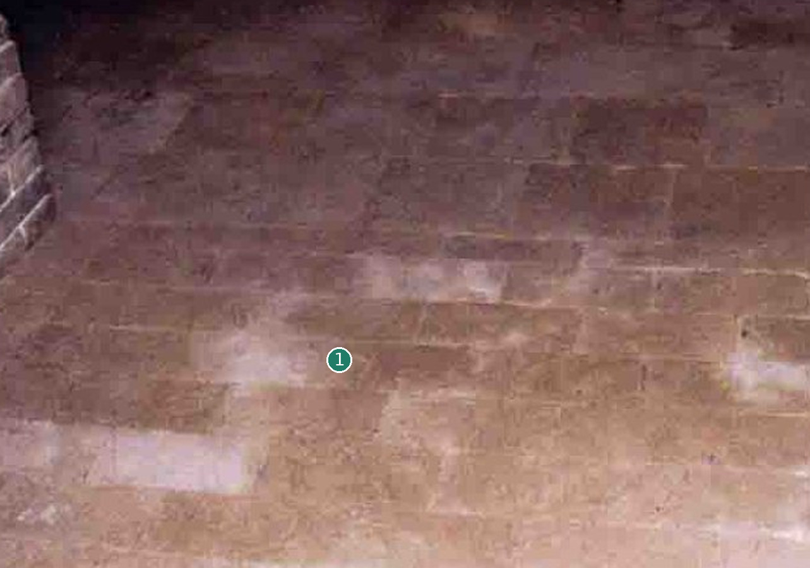
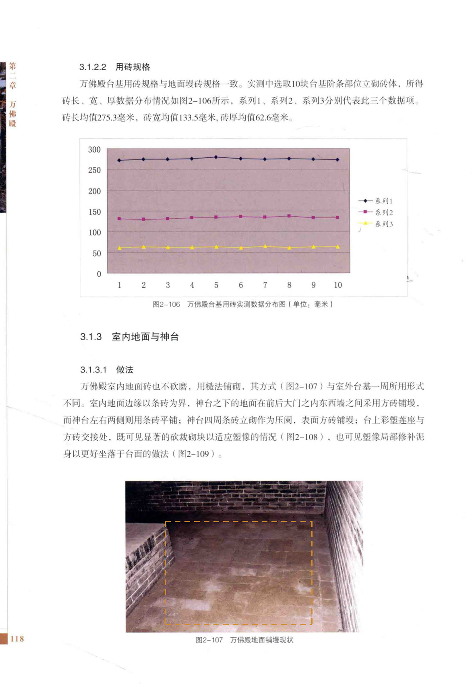

没有独立批准条砖模型
先看形，再看差异

没有可对应的独立模型未以占位长方体、组合图或推测模型代替。
不把铺装缝隙补为标准榫槽
定性对照：两侧未做比例归一或像素叠加。橙色虚框只表示原图查找范围。
02 / 形态细节
其他角度、截面与现有局部版本
03 / 原图与位置
目标在原始资料的哪里


安装位置与复用
室内地面边界/区域
变体：沿用现行登记口径
Master：无独立批准Master
对应实例范围（1条登记记录，不是物理件数）
- 室内条砖族-UNKNOWN · 室内地面边界/区域
04 / 证据与边界
出处、模型身份与未知部分
仍然未知：尺寸统计见原页，照片不作透视尺寸测量。
原工程记录（按原文保留）：条砖长宽有测量支持，厚度未测；端部、磨损与铺法不能由矩形轮廓推定。

模型原始渲染、网格身份与批准范围
A1、A2、A3共享测绘数据脉络，不作为三次独立复测。官方展示只作形态参考；推断、遮挡与未知不升级为实测事实。